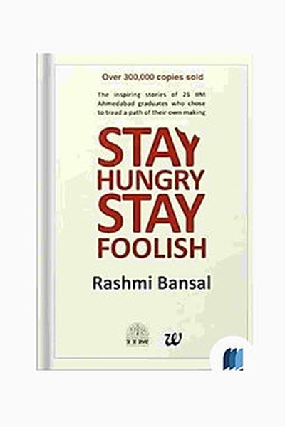

Library › Business & Startups
Stay Hungry Stay Foolish — Summary & Key Lessons

25 IIM alumni who quit jobs to build India — the MBA as a toolkit, not a ticket.
📖 OPEN THE FULL INTERACTIVE BREAKDOWN →🌐 Read it in Hindi, Hinglish, Gujarati, Tamil & 22 more languages — free, with audio.
💡 The Big Idea
Rashmi Bansal chronicles 25 IIM alumni who chose the road less travelled — leaving cushy corporate jobs to build companies from nothing. The title comes from Steve Jobs' Stanford speech, and the book's message is deeply Indian: you don't need a Silicon Valley, a billion-dollar idea or a perfect plan to start. You need the hunger to build something of your own and the foolishness to ignore 'safe' advice. From education to food to healthcare, these founders found gaps in their own communities and filled them. The book is proof that entrepreneurship in India starts with a small step, a borrowed desk, and a refusal to settle.
🧠 The 6 Key Lessons
Lesson 1: The MBA Is Not a Ticket — It's a Toolkit
1: The Graduates
Bansal's founders didn't leave IIM to become entrepreneurs — most started in jobs, then realized the degree gave them confidence and networks, not destiny. The IIM brand opened doors, but the real toolkit was analytical thinking, peer pressure to excel, and alumni networks that later became co-founders and first customers. Bansal's point: any education is what you make of it. The piece of paper gets you into the room; what you do inside the room builds your life. Waiting for the perfect moment — or the perfect pedigree — is the enemy of starting.
📖 Example: Several founders describe how the 'IIM network' gave them their first client or investor call — a fellow alumnus who answered because of a shared alma mater. The degree wasn't the business; it was the warm introduction. Read the full example →
⚡ Do this: Identify one skill, credential or network you already have — and list 3 ways it could open doors you're not using.
Lesson 2: Start Small, Start Local — The Indian Way
2: Small Beginnings
Almost none of Bansal's founders started with venture funding or grand offices. They started with personal savings, one city, one product, and modest ambitions — a tiffin service, a single franchise, a small consulting firm. This is the book's most valuable lesson for India: the market is so vast and underserved that you do not need to invent a new category; you need to serve one neighbourhood brilliantly. Local trust, word-of-mouth and cash-flow-positive smallness beat flashy scale. Small is not a phase to escape — it is a laboratory where you learn what actually works.
📖 Example: She profiles founders who began by serving 20 customers a day and scaled only after proving the model worked — like the education startup that started with one coaching class before becoming a chain. The local test came first; the big plan came later. Read the full example →
⚡ Do this: Define your business idea in terms of 'the smallest version that serves 10 paying customers' — and start there.
Lesson 3: Passion Without Execution Is Just a Hobby
3: The Idea
Bansal's founders all had ideas, but the ones who succeeded treated passion as fuel, not the engine. Execution — showing up daily, selling, fixing, iterating — is what separates businesses from hobbies. The book repeatedly shows that the 'best' idea often loses to the well-executed ordinary one. In India's messy market, execution means dealing with real problems: finding suppliers, collecting payments, hiring relatives who disappoint you. Passion gets you started; systems keep you alive. If you cannot execute in the boring, difficult first year, no idea will save you.
📖 Example: One founder described his first year as 'selling from the boot of my car, visiting 40 shops a day, being rejected 35 times'. The idea was simple; the execution was relentless — and that relentlessness became the moat competitors couldn't copy. Read the full example →
⚡ Do this: Pick the most boring, repetitive task in your business and do it 10 times today. Execution is a habit.
Lesson 4: Money Is Oxygen, Not Purpose
4: Funding & Finances
The book is refreshingly honest about money: several founders bootstrapped because no one would fund them, and that constraint became their strength. Without investor pressure, they grew at sustainable speeds, kept ownership, and learned to make every rupee work. Bansal shows that Indian entrepreneurship can thrive on small capital if the unit economics work — a lesson lost in the startup world's funding obsession. Money is necessary like oxygen, but it is not the reason to breathe. The founders who obsessed over customers before investors built companies that outlived funding cycles.
📖 Example: A food company founder recounts running the business on 'bhukkad' budgets — negotiating with every supplier, reusing packaging, and staying profitable from month one. Years later, when investors came knocking, the company didn't need them — it chose them. Read the full example →
⚡ Do this: Before chasing funding, write the unit economics of your business on one page: cost per unit, price, margin. Fix the math first.
Lesson 5: Failure Is a Tuition Fee, Not a Verdict
5: Setbacks
Several of Bansal's 'successful' founders hit near-death moments — a partner who cheated, a product that flopped, a market that vanished. The book treats these not as cautionary tales but as tuition: the most expensive lessons are the ones you never forget. Resilience in Indian business means surviving slow payments, regulatory surprises and family pressure. The founders who made it were the ones who reframed failure as information and kept moving. Every setback trimmed their hubris and sharpened their model. What looks like a detour from outside is often the main road.
📖 Example: One founder lost his entire first venture to a partner's fraud — and started again with a new rule: never depend on one person for money or trust. The second company became his success, built directly on the rubble of the first. Read the full example →
⚡ Do this: Write down your last failure and extract one rule from it. Apply that rule to your current plan.
Lesson 6: Stay Hungry, Stay Foolish — The Unfinished Mind
6: The Journey Continues
The title lesson: the founders who kept growing were the ones who never felt 'done'. Success made them hungrier — new cities, new products, new problems. The 'foolish' part is equally important: the willingness to attempt things that look irrational to outsiders, because you trust your own data over conventional wisdom. Bansal ends with a call to action: India needs more builders, not more spectators. The book you hold is proof that ordinary graduates became extraordinary founders — and the only difference was starting. The hunger, once lit, becomes the fire that cooks everything else.
📖 Example: The book's most memorable founders are those who, after one success, started something entirely different — a restaurateur opening a school, a consultant building a factory. They stayed hungry by staying beginners, over and over again. Read the full example →
⚡ Do this: Ask yourself monthly: 'What have I learned this month that makes me feel like a beginner again?' If nothing — start something new.
✅ 5-Step Action Plan
- Define the smallest version of your idea that can serve 10 paying customers.
- Fix your unit economics on one page before anything else.
- Do the most boring execution task 10 times this week — build the habit.
- Extract one rule from your last failure and apply it now.
- Join one founder community or find one mentor — networks are the warm door.
⚠️ When This Doesn't Work
Bansal's 'Indian entrepreneurs who made it, and how' is the most inspiring Indian startup book ever — and Vedantu is the warning that the inspiration has a hidden clause: the edtech unicorn's founders were the book's exact heroes — hungry, brilliant, education-obsessed — and their hunger carried them to a $1 billion valuation and then to near-zero when the pandemic boom that fed them ended. The book profiles survivors; the graveyard is full of equally hungry founders whose timing or model failed. The caveat: stay hungry, yes — and stay honest about which part of your growth is hunger and which part is luck. The two are easy to confuse at the top.
💀 The Graveyard Proves It
🧑🏫 Vedantu — Edtech Unicorn That Went From $1B to Near Zero. Burn: $1B valuation → shut live classes, laid off ~85% of staff. Read the full case study →
💬 Best Quotes from Stay Hungry Stay Foolish
- “Stay hungry, stay foolish — because the foolish are the ones who try.”
- “An MBA is not a ticket to success; it's a toolkit you must learn to use.”
- “In India, the market is not waiting for a better idea — it's waiting for someone to show up.”
Interactive version: mark lessons as read, listen in your language, share quote cards.